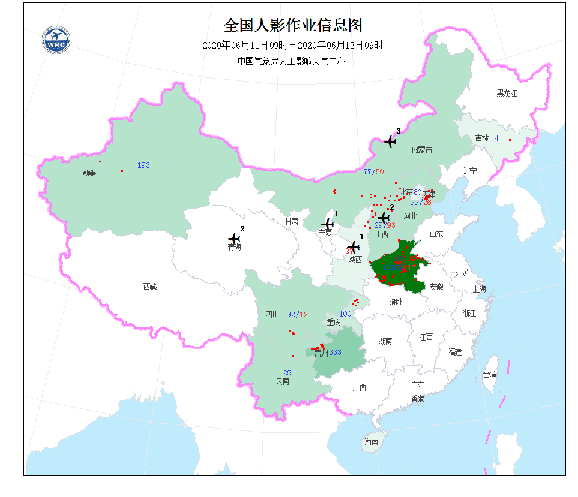

全国地面作业情况占比
更多>
全国
东北
华北
西北
中部
东南
西南
数量
124
86
9
39
29
65
占比
35.23%
24.43%
2.56%
11.08%
8.24%
18.47%
全国飞机作业情况占比
更多>
全国
东北
华北
西北
中部
东南
西南
数量
19
56
29
78
34
95
占比
25.33%
44.63%
12.96%
11.68%
08.84%
18.37%